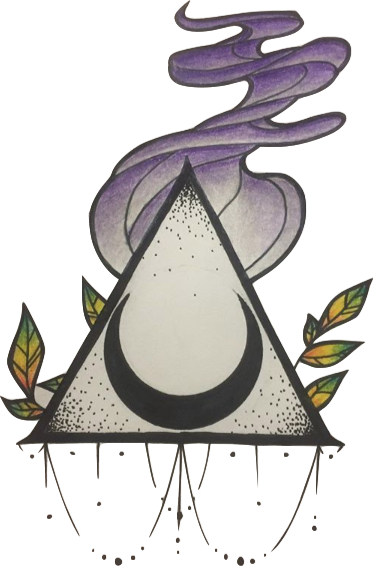

Aurora
An artist, musician, writer, nerd, and now programmer; she makes her way through life with an inexorable need for knowledge and purpose. Always seeking new and more in depth explinations for the world around her, her zest to learn and absorb has led her through many areas of study through her life. From psychology and philosophy to artistry of many forms, she has found herself most recently tackling the fascinating subject of computers. Ever the creator, she has now started the long road to making a career of this. This is a repository of her work so far.